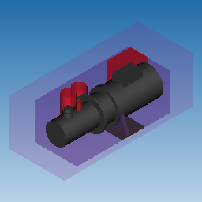

Scene graph elements, bodies and subshapes in B-Rep representation and mesh objects (triangle/line/point sets) in Polygonal representation may have attached visual appearances.
The appearance (ModelData_Appearance) defines how this object should be visualized and contain the following components:
- material - defines graphical material.
- generic color - defines an RGBA color.
- line styles - define line properties.
Attachment and Query
Appearance of the scene graph element can be set using ModelData_SceneGraphElement::SetAppearance() and retrieved with ModelData_SceneGraphElement::Appearance(). By default, no appearance is attached and null appearance is returned. Sub-shapes in B-Rep representation and meshes in polygonal representations are set using ModelData_BRepRepresentation::SetAppearance() and ModelData_PolyVertexSet::SetAppearance().
Color
Generic color is used to define a simple RGBA color, when a more feature-rich style (e.g. material) is not available. For instance, a generic color is used when importing a model from formats which only support simple colors (e.g. Parasolid). Generic colors allow to reduce memory footprint comparing to use of materials.
When both a material and a generic color are defined the material value prevails.
The following example demonstrates creation and assignment of a color:
ModelData_Color aColor (1.f, 0.f, 0.f);
ModelData_Appearance anAppearance (aColor);
aPart.SetAppearance (anAppearance);
Material
Material definition (ModelData_Material) is aligned with the OpenGL definition. A material contains:
- color components: ambient, diffuse, specular, and emission colors as RGBA values;
- shininess as float.
The following screenshot demonstrates an assembly with parts of different material settings, including transparency:

Parts with different materials
The following example demonstrates creation and assignment of a material:
ModelData_Color aDiffuseColor (1.f, 0.5f, 0.25f, 1.f);
ModelData_Material aMaterial (aDiffuseColor);
aMaterial.Shininess() = 96.f;
aPart.SetAppearance (ModelData_Appearance (aMaterial));
Retrieval of visual styles
The following example demonstrates how to retrieve material or generic color as a material:
ModelData_Appearance anAppearance = aPart.Appearance();
if (anAppearance) {
ModelData_Material aMaterial;
if (anAppearance.ToMaterial (aMaterial)) {
}
}
The following example demonstrates how to retrieve material or generic color as a simple color:
ModelData_Appearance anAppearance = aPart.Appearance();
if (anAppearance) {
ModelData_Color aColor;
if (anAppearance.ToColor (aColor)) {
}
}
Conventions on Using Appearances
- Assemblies should not have own appearances. Such appearance most likely will be ignored by any algorithm (e.g. by an exporter to some target format). If all children in the assembly must use some common appearance (e.g. be of a yellow color) then an extra instance should be created which would refer to the assembly and own the desired appearance.
- Appearance attributes attached to a deeper element overide the appearance attributes attached to parent element. Thus, if a part has an appearance attribute it shall override any other appearance attribute attached at any instance up in the hieararchy. Likewise, an appearance attribute attached at some B-Rep face shall override any parent part's or instance's attribute.
Sharing of styles
To enable sharing (i.e. instead of duplicating) of materials and colors, they should be assigned via ModelData_MaterialObject and ModelData_ColorObject respectively. They subclass ModelData_BaseObject which enable sharing and refer to ModelData_Material and ModelData_Color respectively, which are simple POD's (Plain Old Data, i.e. simple data containers).
The following example demonstrate this:
std::unordered_map<std::string, ModelData_MaterialObject> aMaterialLibrary;
aMaterialLibrary.emplace ("bronze", ModelData_MaterialObject (ModelData_Material (
ModelData_Color (0.2125f, 0.1275f, 0.054f),
ModelData_Color (0.714f, 0.4284f, 0.18144f),
ModelData_Color (0.393548f, 0.271906f, 0.166721f),
ModelData_Color (0.f, 0.f, 0.f),
25.6f
)));
...
aPart1.SetAppearance (aMaterialLibrary["bronze"]);
ModelData_MaterialObject aMat1 = aPart1.Appearance().Material();
...
aPart2.SetAppearance (aMaterialLibrary["bronze"]);
ModelData_MaterialObject aMat2 = aPart2.Appearance().Material();
assert (aMat1 == aMat2);
In the above approach materials will be shared but ModelData_Appearance objects will still be distinct. To enable sharing of appearances just store the appearance objects:
std::unordered_map<std::string, ModelData_Appearance> anAppearanceLibrary;
anAppearanceLibrary.emplace ("bronze", ModelData_MaterialObject (ModelData_Material (
ModelData_Color (0.2125f, 0.1275f, 0.054f),
ModelData_Color (0.714f, 0.4284f, 0.18144f),
ModelData_Color (0.393548f, 0.271906f, 0.166721f),
ModelData_Color (0.f, 0.f, 0.f),
25.6f
)));
...
aPart1.SetAppearance (anAppearanceLibrary["bronze"]);
ModelData_Appearance anAppearance1 = aPart1.Appearance();
...
aPart2.SetAppearance (anAppearanceLibrary["bronze"]);
ModelData_Appearance anAppearance2 = aPart2.Appearance();
assert (anAppearance1 == anAppearance2);